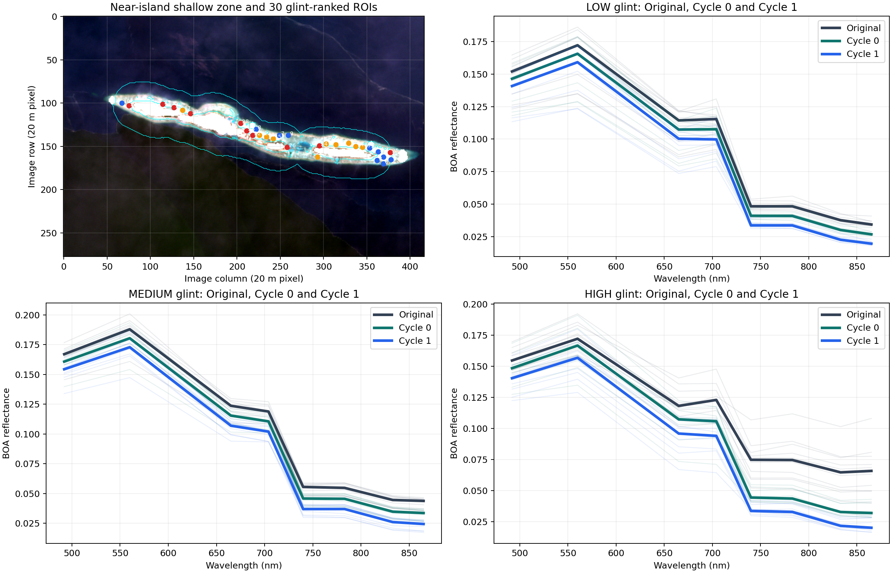

Shallow-water glint validation
Scene: 20240925_S2A · Grid: 20 m · ROIs: 30 windows of 7 × 7 pixels.
Shallow-zone definition: valid Sentinel-2 water located 80–500 m from mapped island land. Around-island proximity is used because measured bathymetry is unavailable; the report does not invent depth values.
1. Define shallow water around the island
The cyan boundary shows valid water in the 80–500 m belt around SCL-mapped island land. Clouds and non-water pixels are excluded, and every selected 7 × 7 ROI must be entirely valid water.
2. Select and classify shallow-water ROIs by glint
Only after defining the shallow zone, its 7 × 7 ROI candidates are ranked using the mean smaller B11/B12 SWIR surface-reflection indicator. The lower third is LOW, middle third MEDIUM and upper third HIGH. Ten separated ROIs are selected from each group.
Group limits: LOW ≤ 0.008186; MEDIUM > 0.008186 to ≤ 0.009794; HIGH > 0.009794.

Map: blue = LOW, orange = MEDIUM, red = HIGH glint. These are all inside the same near-island shallow zone.
3. Spectral change in LOW, MEDIUM and HIGH shallow-water ROIs
The other three graphs separately show LOW, MEDIUM and HIGH glint ROIs. Gray is Original, green is Cycle 0 and blue is Cycle 1. Thin lines are the 10 individual ROIs; thick lines are group medians.
How to read it: Original → Cycle 0 is the first removal. Cycle 0 → Cycle 1 is the additional removal. HIGH should generally receive more glint-related removal than LOW, while every spectrum should remain smooth and non-negative.
Show all group-median numerical values
| Glint group | Band | Wavelength (nm) | Original | Cycle 0 | Cycle 1 |
|---|---|---|---|---|---|
| LOW | B02 | 492 | 0.151940 | 0.146345 | 0.140749 |
| LOW | B03 | 560 | 0.172054 | 0.165552 | 0.159050 |
| LOW | B04 | 665 | 0.114370 | 0.107326 | 0.100281 |
| LOW | B05 | 704 | 0.115415 | 0.107597 | 0.099780 |
| LOW | B06 | 740 | 0.048440 | 0.041163 | 0.033776 |
| LOW | B07 | 783 | 0.048415 | 0.041027 | 0.033735 |
| LOW | B08 | 833 | 0.037754 | 0.030237 | 0.022721 |
| LOW | B8A | 865 | 0.034445 | 0.026906 | 0.019728 |
| MEDIUM | B02 | 492 | 0.167021 | 0.160799 | 0.154366 |
| MEDIUM | B03 | 560 | 0.187942 | 0.180410 | 0.172878 |
| MEDIUM | B04 | 665 | 0.123698 | 0.115442 | 0.106979 |
| MEDIUM | B05 | 704 | 0.118876 | 0.110620 | 0.102029 |
| MEDIUM | B06 | 740 | 0.055567 | 0.045849 | 0.036993 |
| MEDIUM | B07 | 783 | 0.054788 | 0.045614 | 0.037039 |
| MEDIUM | B08 | 833 | 0.044620 | 0.034805 | 0.026085 |
| MEDIUM | B8A | 865 | 0.043839 | 0.033668 | 0.024462 |
| HIGH | B02 | 492 | 0.154735 | 0.148539 | 0.140503 |
| HIGH | B03 | 560 | 0.172225 | 0.166742 | 0.156927 |
| HIGH | B04 | 665 | 0.118237 | 0.107424 | 0.095998 |
| HIGH | B05 | 704 | 0.123029 | 0.105874 | 0.094127 |
| HIGH | B06 | 740 | 0.074897 | 0.044528 | 0.033797 |
| HIGH | B07 | 783 | 0.074732 | 0.043723 | 0.032987 |
| HIGH | B08 | 833 | 0.064797 | 0.032926 | 0.021809 |
| HIGH | B8A | 865 | 0.065957 | 0.032096 | 0.020253 |
4. Safety and shallow-bottom preservation
Interpretation: no selected shallow-water spectrum became negative. The high B03 rank correlation means that locations which were relatively bright or dark before correction generally kept their relative spatial order afterward. This supports preservation of shallow-bottom structure, but it is not a depth-accuracy measurement.
5. Conclusion
This is a direct shallow-water correction check without HydroLight. It shows how LOW, MEDIUM and HIGH surface-reflection conditions change through Cycle 0 and Cycle 1, and whether shallow-water structure survives. It cannot prove exact depth or perfectly zero glint without bathymetry or field Rrs.
Exact ROI values
Show all 30 shallow-water ROIs
| ROI | Glint group | Distance to island (m) | Raw SWIR indicator | Cycle 0 visible removal | Cycle 1 visible removal | Minimum final band |
|---|---|---|---|---|---|---|
| SW01 | LOW | 487 | 0.007837 | 0.006118 | 0.006118 | 0.018126 |
| SW02 | LOW | 189 | 0.007955 | 0.006210 | 0.006210 | 0.021345 |
| SW03 | LOW | 206 | 0.007667 | 0.005986 | 0.005986 | 0.018878 |
| SW04 | LOW | 301 | 0.007878 | 0.006150 | 0.006150 | 0.018649 |
| SW05 | LOW | 160 | 0.009161 | 0.007152 | 0.007152 | 0.023281 |
| SW06 | LOW | 350 | 0.007951 | 0.006207 | 0.005121 | 0.019782 |
| SW07 | LOW | 204 | 0.008139 | 0.006354 | 0.005646 | 0.018851 |
| SW08 | LOW | 261 | 0.008591 | 0.006707 | 0.006707 | 0.020634 |
| SW09 | LOW | 272 | 0.007584 | 0.005920 | 0.005299 | 0.021227 |
| SW10 | LOW | 303 | 0.008178 | 0.006384 | 0.006384 | 0.019673 |
| SW11 | MEDIUM | 108 | 0.009729 | 0.007595 | 0.007595 | 0.026422 |
| SW12 | MEDIUM | 160 | 0.009529 | 0.007439 | 0.007439 | 0.017353 |
| SW13 | MEDIUM | 180 | 0.009549 | 0.007455 | 0.007455 | 0.026725 |
| SW14 | MEDIUM | 120 | 0.009771 | 0.007628 | 0.007628 | 0.027695 |
| SW15 | MEDIUM | 141 | 0.008782 | 0.006856 | 0.006856 | 0.018412 |
| SW16 | MEDIUM | 120 | 0.009618 | 0.007509 | 0.007509 | 0.027300 |
| SW17 | MEDIUM | 108 | 0.011434 | 0.008926 | 0.008622 | 0.022479 |
| SW18 | MEDIUM | 184 | 0.009712 | 0.007582 | 0.007582 | 0.018576 |
| SW19 | MEDIUM | 126 | 0.009688 | 0.007563 | 0.007563 | 0.024891 |
| SW20 | MEDIUM | 102 | 0.008606 | 0.006719 | 0.006719 | 0.024033 |
| SW21 | HIGH | 140 | 0.031376 | 0.018121 | 0.008797 | 0.018008 |
| SW22 | HIGH | 100 | 0.040778 | 0.005186 | 0.011130 | 0.016464 |
| SW23 | HIGH | 102 | 0.036884 | 0.008369 | 0.011127 | 0.019450 |
| SW24 | HIGH | 80 | 0.018273 | -0.001444 | 0.009574 | 0.028183 |
| SW25 | HIGH | 467 | 0.014824 | 0.007267 | 0.007422 | 0.019521 |
| SW26 | HIGH | 100 | 0.052235 | 0.028370 | 0.005794 | 0.023577 |
| SW27 | HIGH | 108 | 0.016857 | 0.009500 | 0.010703 | 0.029202 |
| SW28 | HIGH | 152 | 0.012241 | 0.009556 | 0.009360 | 0.016847 |
| SW29 | HIGH | 100 | 0.013523 | 0.010557 | 0.010557 | 0.026925 |
| SW30 | HIGH | 82 | 0.015114 | 0.008971 | 0.009411 | 0.020986 |